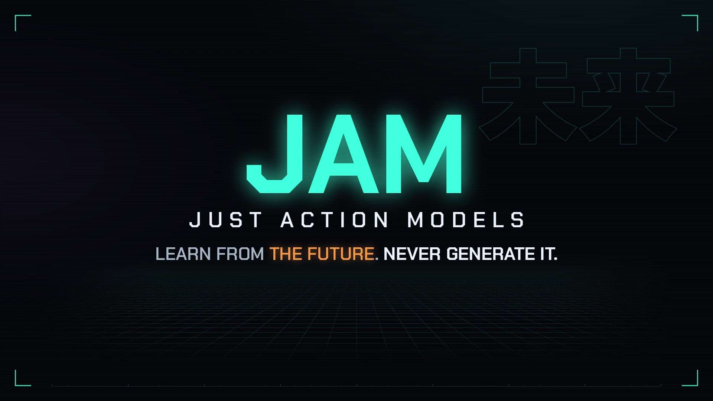

Stronger when the world shifts
Each dot: a LIBERO-Plus task only one policy solved.
By category
Scroll for all columns
Vision-language-action or world-action?
Learn from the future. Never generate it in training.
Predict only actions at deployment.

01Method
A VLA ignores the recorded future, a WAM generates it, and JAM predicts its features.
ABackbone
BLoss on the future
CInference path
Foresight loss
02Target
Future-only offsets beat the current only.
AArchitecture
BReadout offsets
CFuture anchor
Every evaluated target
03Backbones
Six backbones, three families, three benchmarks: wherever generation is reported, foresight scores higher.
04Rollouts
Six pairs play in sync from the same initial state: same backbone, different training.
05Probe
Probes reconstruct the frame 16 steps ahead; with future targets, JAM (Ovis-U1) edges out ImageWAM.
06Attention
Paper example on Ovis-U1: the instruction names two mugs, and ImageWAM concentrates on the held one.
07Results
JAM next to other policies on LIBERO-Plus, LIBERO and RoboTwin 2.0.
08Compute
Generation denoises future frames every update; cached foresight processes only the current frame.
AArchitecture
BForesight targets
09Ablations
The backbone needs pretraining, the target does not, and JAM is more robust in six of seven perturbation types.
Each dot: a LIBERO-Plus task only one policy solved.
10Cite